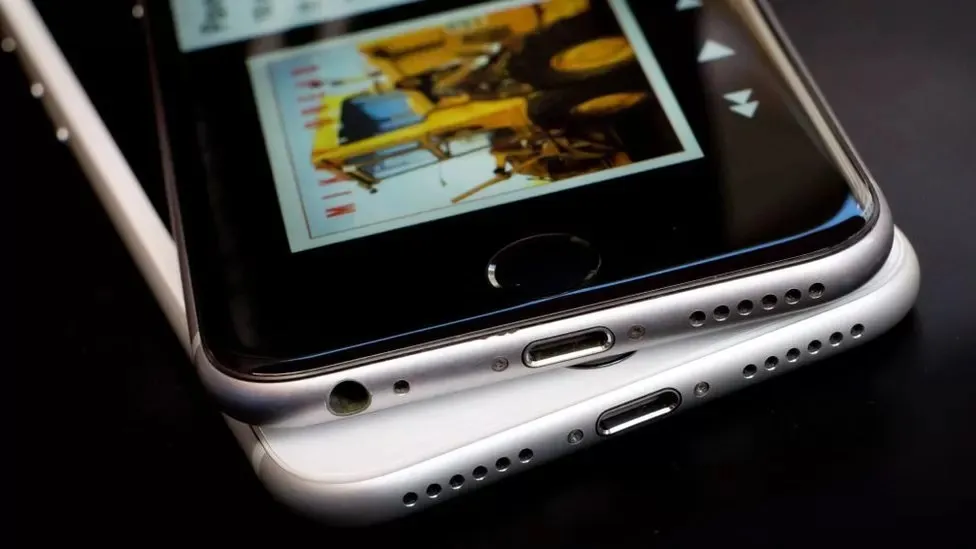

Apple pays out over claims it deliberately slowed down iPhones.
By Tom Gerken
Technology reporter
Apple has begun making payments in a long-running class action lawsuit over claims it deliberately slowed down certain iPhones in the US.
Complainants will receive a cut of a $500m (£394m) settlement which works out to around $92 (£72) per claim.
Apple agreed to settle the lawsuit in 2020, stating at the time it denied any wrongdoing but was concerned with the cost of continuing litigation.
A similar case under way in the UK is seeking £1.6bn in compensation.
The US case dates back to December 2017, when Apple confirmed a long-held suspicion among phone owners by admitting it had deliberately slowed down some iPhones as they got older.
It said that as batteries aged, their performance decreased, and so the "slowdown" lengthened the phones' lifespan.
But it was accused of throttling the performance of certain iPhones without telling its customers, and the uproar resulted in Apple offering a cut-price battery replacement to fix the problem.
It led to the US legal action. At the time of the settlement, it was estimated that each person might receive as little as $25 each but the actual pay-out appears to be almost four times that sum.
In the UK, Apple lost a bid to block a similar mass action lawsuit last November.
The case, first brought by Justin Gutmann in June 2022, represents an estimated 24 million iPhone users.
Apple has previously called the lawsuit "baseless" and said "we have never - and would never - do anything to intentionally shorten the life of any Apple product, or degrade the user experience to drive customer upgrades".
Mr Gutmann told the BBC he was pleased to hear about payments being made in the US, but warned it does not have any bearing on the UK case.
"It doesn't advance our position here, they haven't admitted anything - they've settled," he said.
"It's a moral victory but not much use to me. I've got to plough on and pursue the case in the UK jurisdiction."
He said Apple was "fighting tooth and nail" against the UK class action, which will next appear at the Court of Appeal who will consider a call from the firm to halt the case.
He said it was difficult to put a timeline on what would come next but hopes it will go to trial in late 2024 or early 2025.